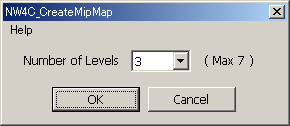
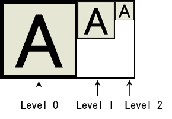

This plug-in runs on Photoshop to create mipmap images (images arranged side by side in shrinking sizes, with width and height shrunk by 1/2, 1/4, and so on). Each image created for each level becomes a separate layer. If you run the Mipmap Creation plug-in and then save the file in NW4C_Tga (NW4C_ctex) format, the mipmap data will be exported to the file.
Prepare an image for the principal (top level) image. The width and height of this image must be values of 16 or greater that are powers of 2.
If a hidden layer has been selected, choose a shown layer.
From the File menu select Automatic Processing > NW4C_CreateMipMap. A dialog box is displayed.

Enter the number of mipmap levels. At this time, count the principal image as one level. The minimum number of levels is two. The maximum number of levels depends on the size of the original image, but the absolute maximum is eight.
Select All to create the maximum number of levels possible for an image of a particular size.
Select All(ETC1) to create the maximum number of levels possible for an image of a particular size when ETC1 compressed. (The maximum is seven.)
Click OK to create the mipmap images.
The images for each level are separate layers, arranged as shown in the following figure.
Mipmap Images (number of levels = 3)

If you want to change the image pattern after creating the mipmap images, you must edit the data for each layer. However, layers must not be moved and image sizes must not be changed.
If a layer is unnecessary, the images can be merged.
When a file that has been saved in NW4C_Tga (NW4C_ctex) format after running the Mipmap Creation plug-in is later reloaded, all layers are merged. You can restore the layers for each level by running the Mipmap Creation plug-in on this file.
Even if images were not created using the Mipmap Creation plug-in, you can select the Use MipMap option when you save the file in NW4C_Tga (NW4C_ctex) format. Arrange the images next to each other, top-aligned, in shrinking sizes with each half the width and height of the other, and then run the Mipmap Creation plug-in.
To change the number of mipmap levels, first change the width of the mipmap image and then run the Mipmap Creation plug-in.
For example, assume that a mipmap image with three levels has been created for a 32x32 original image. To change the number of levels to two, open Canvas Size in the Image menu and set the width to 48 (= 32 + 16) . (Keep the base position on the left.) The number of levels becomes 2 when you now run the Mipmap Creation plug-in.
A vertically aligned mipmap image can be converted to a horizontally aligned mipmap image by executing the mipmap creation plug-in on the vertically aligned image. (With a vertically aligned mipmap, each consecutive image has half the width and height of the previous image, and images are arranged vertically with their left edges aligned.)
The plug-in only runs if the image mode is Grayscale, Index Color, or RGB Color.
If the image mode is Index Color, the plug-in changes the mode to RGB Color. A confirmation message is displayed when this is the case. Click OK to continue or Cancel to stop.
You cannot run the plug-in on files that use 16 bits per channel.
Executing with more than one alpha channel is impossible.
Automatically merge images to create a compressed image when there are multiple visible layers.
In PhotoShop, select Edit > Environment settings > General to select the interpolation method to use when shrinking the images.
When a file that has been saved in NW4C_Tga (NW4C_ctex) format after running the Mipmap Creation plug-in is later reloaded, all layers are merged. You can restore the layers for each level by running the Mipmap Creation plug-in after loading the file.
The contents of the margins created to the lower right of the image are not saved in NW4C_Tga (NW4C_ctex) format.
If you are going to apply a color depth filter or ETC filter, first run the Mipmap Creation plug-in and merge all layers.
A warning dialog box is displayed if you attempt to execute the Mipmap Creation plug-in on an image to which a color depth filter or ETC filter was already applied.
CONFIDENTIAL